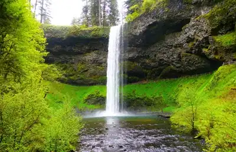

Hikes
About the hikes
The hikes listed below have been chosen by their ease and location in the Central Willamette Valley. All hikes are a mile or less with low to moderate inclines (mostly low).
South Falls
1.0 mi out and back trip on Canyon Trail from the South Falls parking lot to the trail behind the 177 ft waterfall.